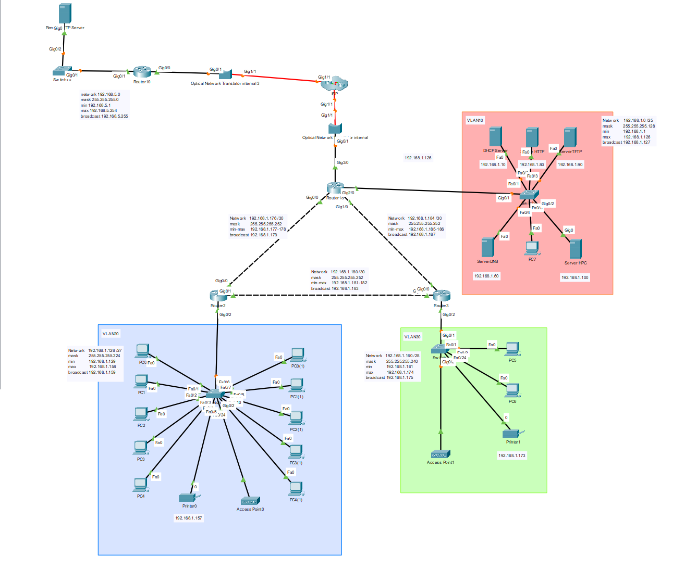

A topológia felépítését a cég szükségletei alapján készítettük el.
A topológia 3 vlanból áll (+ majd egy távoli vlanból, ami adattárolásra szolgál majd) 1 vlan a dolgozóknak, 1 a cégvezetőknek és 1 az adminnak és a szervereknek.
DHCP, TFTP, HTTP és High Performance Computing szerverek
3 router redundásan összekapcsolva köti össze a vlanokat A routerek között az adatáramlás nagy sebességű legyen.